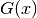
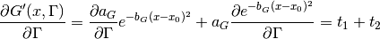
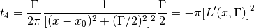
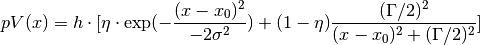

The Pseudo-Voigt function is an approximation for the Voigt function, which is a convolution of Gaussian and Lorentzian function. It is often used as a peak profile in powder diffraction for cases where neither a pure Gaussian or Lorentzian function appropriately describe a peak.
Instead of convoluting those two functions, the Pseudo-Voigt function is defined as the sum of a Gaussian peak  and a Lorentzian peak  , weighted by a fourth parameter
, weighted by a fourth parameter  (values between 0 and 1) which shifts the profile more towards pure Gaussian or pure Lorentzian when approaching 1 or 0 respectively:
(values between 0 and 1) which shifts the profile more towards pure Gaussian or pure Lorentzian when approaching 1 or 0 respectively:

Both functions share three parameters: Height (height of the peak at the maximum), PeakCentre (position of the maximum) and FWHM (full width at half maximum of the peak).
Thus the Pseudo-voigt function can be expressed as

where  and L’(x, Gamma) are normalized Gaussian and Lorentzian.
And
and L’(x, Gamma) are normalized Gaussian and Lorentzian.
And  is FWHM.
is FWHM.
In Fullprof notation,  is used for FHWM instead of .
In the code, gamma is used for FWHM in order to avoid confusion with peak height
is used for FHWM instead of .
In the code, gamma is used for FWHM in order to avoid confusion with peak height  .
To be in line with it, we prefer to use for FWHM here.
.
To be in line with it, we prefer to use for FWHM here.
Pseudo-voigt function in Mantid has the following native parameters
 : shared peak height between Gaussian and Lorentzian. (or ): shared FWHM be between Gaussian and Lorentzian
: shared peak height between Gaussian and Lorentzian. (or ): shared FWHM be between Gaussian and Lorentzian : ratio of intensity of Gaussian.
: ratio of intensity of Gaussian.From given FWHM
Gaussian part

where


Lorentzian part 

Thus both  and
and  are normalized.
are normalized.
![\frac{\partial pV(x)}{\partial \eta} = I \cdot [G'(x, \Gamma) - L'(x, \Gamma)]](../../_images/math/b83512bb97485d0a6f91c5d058b7043311468e3c.png)

![\frac{\partial pV(x)}{\partial x_0} = I \cdot [\eta \frac{\partial G'(x, \Gamma)}{\partial x_0} + (1 - \eta) \frac{\partial L'(x, \Gamma)}{\partial x_0}]](../../_images/math/6683311cdbe891681b751c200835f13d812fae5d.png)

![\frac{\partial L'(x, \Gamma)}{\partial x_0} = \frac{\Gamma}{2\pi} (-1) (-2) (x - x_0) \frac{1}{[(x - x_0)^2 + \frac{\Gamma^2}{4}]^2} = \frac{(x-x_0)\Gamma}{\pi[(x - x_0)^2 + \frac{\Gamma^2}{4}]^2} = \frac{4\pi(x-x_0)}{\Gamma}[L'(x, \Gamma)]^2](../../_images/math/c8c5d258a88abb71fb90e727e09570e985073517.png)
![\frac{\partial pV(x)}{\partial \Gamma} = I \cdot [\eta \frac{\partial G'(x, \Gamma)}{\partial \Gamma} + (1 - \eta) \frac{\partial L'(x, \Gamma)}{\partial \Gamma}]](../../_images/math/6705ae958d70c09e8979000d5163fca1d7403cb2.png)
For Gaussian part:



For Lorentzian part:



Peak parameters can be estimated from observation. But some peak parameters are correlated, because peak height is not a basic parameter of Pseudo-voigt.
Here is the summary:
): Peak height will be re-calculated.: Peak height will be re-calculated.Mixing parameter  can be estimated from the observed value of peak’s height, FWHM and intensity.
can be estimated from the observed value of peak’s height, FWHM and intensity.
Before Mantid release v3.14, the equation of Pseudo-Voigt is defined as

This equation has several issues:
 ,
,  . By this definition, the mixing ratio factor between Gaussian and Lorentzian is the the intensity ratio at . But it does not make sense with other
. By this definition, the mixing ratio factor between Gaussian and Lorentzian is the the intensity ratio at . But it does not make sense with other  value. According to the literature or manual (Fullprof and GSAS), shall be the ratio of the intensities between Gaussian and Lorentzian.
value. According to the literature or manual (Fullprof and GSAS), shall be the ratio of the intensities between Gaussian and Lorentzian.The figure below shows data together with a fitted Pseudo-Voigt function, as well as Gaussian and Lorentzian with equal parameters. The mixing parameter for that example is 0.7, which means that the function is behaving more like a Gaussian.

| Name | Default | Description |
|---|---|---|
| Mixing | 0.5 | |
| Intensity | 1.0 | |
| PeakCentre | 0.0 | |
| FWHM | 1.0 |
Categories: FitFunctions | Peak
C++ header: PseudoVoigt.h (last modified: 2020-03-20)
C++ source: PseudoVoigt.cpp (last modified: 2020-03-20)
 :
: